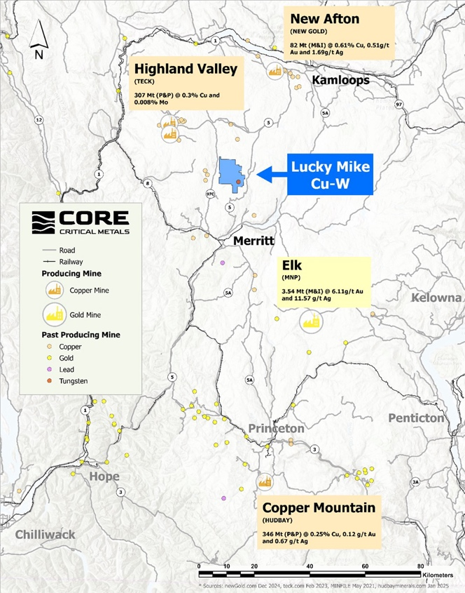

Discover why America's push to secure critical mineral supply chains could hinge on a new discovery… and one company now positioning itself at the center of it.
Conflicts around the world have lit a powder keg in the global metals markets. Governments aren't just talking about national security anymore. They're talking about mineral security.
Because modern defense systems… advanced aircraft… missile guidance systems… satellites… all depend on a group of critical metals the West no longer fully controls. And that realization is beginning to reshape policy at the highest levels.
In fact, the U.S. government has recently moved toward building a multi-billion-dollar strategic stockpile of critical minerals, an initiative often referred to as Project Vault.
The goal is simple: secure reliable access to the materials needed to power modern defense systems and advanced technologies.
What's emerging now looks less like a traditional commodity cycle… and more like a global race to secure the materials that make modern technology possible.
Not an arms race for weapons. But an arms race for the materials required to build them. And that shift is already beginning to create a powerful imbalance between supply and demand.
And there's one company now working to position itself in the middle of that shift.
Core Critical Metals (TSX: CCMC | OTC: CCMCF | WKN: A41G8G)
Core Critical Metals — TSX: CCMC | OTC: CCMCF | WKN: A41G8G
The Supply Chain Problem Isn't Going Away
At one point, China's dominance over critical minerals was viewed as a long-term concern. Now it's becoming a daily headline.
According to recent global data, China remains the dominant player across much of the critical-minerals supply chain, particularly in refining and processing. In some cases, it controls the majority of global production capacity.
That creates a situation where supply can be influenced, restricted, or redirected with very little warning.
Many forecasts suggest that shortages of key critical minerals could persist for years unless new sources are developed. Governments are now actively investing in domestic supply chains. Capital is flowing rapidly into the sector.
The 2027 Pentagon Deadline Changes Everything
For years, the risks surrounding critical mineral supply chains were easy to ignore. Global trade was stable. Materials flowed where they were needed.
But for the first time, the United States has placed a hard deadline on its dependence.
That may sound like a procurement rule. In reality, it is something much bigger. It is a forced reset of the entire supply chain.
The West must now build new sources of supply — from the ground up — in just a few short years. And that process has already begun.
New mines cannot be built overnight. Exploration, permitting, and development can take years, sometimes more than a decade. The window to identify and advance new projects is already narrowing.
That is why early-stage exploration companies are beginning to attract attention. Before supply chains can be rebuilt, new discoveries must first be made.
The Big Money Is Already Moving
Government investment is only part of the story. Private capital and major industry players are also stepping in.
When supply chains become strategic, the stakes change. The companies positioned to help solve those supply challenges begin to attract attention.
The focus is now shifting toward exploration companies capable of identifying new mineral systems in stable jurisdictions. Because before supply chains can be rebuilt, new sources of these materials must first be discovered.
A New Discovery Story Is Beginning to Take Shape
That brings us to Core Critical Metals TSX: CCMC | OTC: CCMCF | WKN: A41G8G
The company is focused on exploring for critical minerals essential to modern industry and defense systems. Its opportunity begins with geology.
Core is targeting large-scale mineral systems associated with geological environments known to host critical metals. These systems can extend over wide areas and often contain multiple zones of mineralization — which means early exploration success can point to something much larger.
The Lucky Mike Project — Positioned in One of British Columbia's Most Prolific Copper Belts

Lucky Mike Cu-W Property — British Columbia, Nicola Mining District. Positioned near Highland Valley, New Afton, Elk, and Copper Mountain.
One of the core assets behind the exploration strategy is the Lucky Mike Property, located in British Columbia's well-established Nicola Mining District.
The project spans more than 7,600 hectares and sits in a region long recognized for hosting large-scale copper and gold systems.
Lucky Mike is positioned in close proximity to several major operations — including Teck Resources' Highland Valley Copper Mine, the largest copper mine in Canada. Highland Valley recently secured a major mine-life extension through 2046, backed by a multi-billion-dollar investment.
The property also sits along the same broader geological trend as other well-known deposits, including New Afton and Copper Mountain.
A Project with Both History and Untapped Potential
Unlike early-stage grassroots projects, Lucky Mike has already seen meaningful historical exploration.
The property hosts a historic resource estimate of approximately 73.5 million tonnes grading 0.27% copper equivalent, pointing to a sizable mineralized system already identified.
Exploration has outlined a large alteration footprint extending roughly 7 kilometers, suggesting the presence of multiple mineralized centers across the property. Additional historical work has highlighted:
- High-grade copper showings
- Long intervals of consistent mineralization
- Evidence of tungsten mineralization from earlier strategic drilling programs
Drill-Ready in a Proven Mining District
Today, Lucky Mike is positioned as a drill-ready project, with targets already identified and access supported by established infrastructure:
- Proximity to major highways
- Access to power and water
- Existing road networks
- Skilled regional workforce
This combination of infrastructure, geology, and location can play an important role in advancing exploration programs efficiently.
And with new targeting techniques — including modern data analysis and AI-assisted interpretation — the company is now working to refine and prioritize areas for future drilling.
Because in large mineral systems like Lucky Mike… it is often the next phase of exploration that defines the true scale of the opportunity.
When Exploration Starts to Deliver Consistent Results
In the mining world, early-stage exploration is often uncertain. Drill programs can produce mixed results.
Some holes hit. Some miss.
But occasionally, a project begins to show a level of consistency that gets attention. Because consistency suggests continuity. And continuity is what large deposits are built on.
At Core Critical Metals TSX: CCMC | OTC: CCMCF | WKN: A41G8G early-stage work is beginning to demonstrate that kind of potential.
Initial exploration has identified mineralized zones across multiple target areas, helping to build a clearer picture of the underlying system.
Each new data point adds to the understanding of how the mineralization is distributed across the project. And as that picture develops, the scale of the opportunity becomes easier to evaluate.
6 Quick Reasons to Watch Core Critical Metals
- Positioned in a Global Supply Chain Shift Governments are actively working to reduce dependence on foreign-controlled critical mineral supply chains. That shift is directing billions of dollars into the sector.
- Exposure to Critical Minerals Essential for Modern Technology Core is targeting materials used across defense systems, electric vehicles, energy infrastructure, and advanced manufacturing — foundational to the modern economy.
- Early-Stage Exploration in Underexplored Ground Operating at the front end of the discovery curve — where the largest upside is often created, before a project is fully defined and widely recognized.
- Targeting Large-Scale Geological Systems Focused on district-scale geological environments capable of hosting multiple zones of mineralization. These systems have historically produced some of the most important mineral discoveries.
- Increasing Attention on Domestic Resource Development Projects located in stable North American jurisdictions are receiving growing attention from governments, industry, and investors as supply chain security becomes a priority.
- Operating at the Intersection of Multiple Macro Trends Critical minerals sit at the center of electrification, automation and robotics, artificial intelligence, and defense modernization — multiple long-term demand drivers simultaneously.
Positioned in a Strategic Moment
Core Critical Metals TSX: CCMC | OTC: CCMCF | WKN: A41G8G is still in the early stages of its exploration story.
But it is operating in a sector where:
- Demand is rising
- Supply is constrained
- And governments are actively searching for solutions
That combination creates a unique backdrop.
Because in periods like this, early-stage exploration companies can become part of a much larger story.
One driven not just by commodity prices… but by national priorities and global supply chains.
The Bottom Line
The race to secure critical minerals is already underway. Governments are investing.
Industries are adapting. And the search for new sources of supply is accelerating.
Companies positioned in the right geological environments — and at the right time — could play an important role in that process.
Core Critical Metals TSX: CCMC | OTC: CCMCF | WKN: A41G8G is one of those companies now working to define its place in that evolving landscape.
And as exploration continues, the story is just beginning to unfold.
Talk to your broker today about
Core Critical Metals
TSX: CCMC | OTC: CCMCF | WKN: A41G8G
| Detail | Information |
|---|---|
| Company | Core Critical Metals Corp. |
| TSX Symbol | CCMC |
| OTC Symbol | CCMCF |
| WKN | A41G8G |
| Flagship Project | Lucky Mike Property, British Columbia |
| Project Size | 7,600+ hectares |
| Historic Resource | ~73.5M tonnes @ 0.27% CuEq |
| Sector | Critical Minerals Exploration |
| Status | Drill-Ready |
For a discussion of the Company's QA/QC and data verification processes and procedures, please see its most recently-filed technical report, a copy of which may be obtained under the Company's profile at www.sedarplus.ca.
Important Disclaimer — Please Read Carefully
This is paid advertising and does not constitute investment advice, a recommendation, or a solicitation to buy or sell any securities. This content has been prepared for informational purposes only and should not be relied upon as the basis for an investment decision.
No Offer or Solicitation: Nothing contained herein constitutes an offer to sell, a solicitation of an offer to buy, or a recommendation of any security or any other product or service by any person or entity. Securities may not be offered or sold in any jurisdiction where such activity would be unlawful.
Forward-Looking Statements: This article contains forward-looking statements regarding future events, conditions, and the business and operations of Core Critical Metals Corp. These statements involve known and unknown risks, uncertainties, and other factors which may cause actual results, performance, or achievements to differ materially from those expressed or implied. Past performance is not indicative of future results.
Risk of Loss: Investing in mining exploration companies involves a high degree of risk. The securities mentioned herein are speculative in nature and there is no guarantee that any return on investment will be realized. You could lose your entire investment. Only invest capital you can afford to lose entirely.
Historic Resource Estimates: Any references to historical resource estimates are based on historical data and have not been verified by a Qualified Person under NI 43-101 standards. These estimates should not be relied upon. A qualified person has not done sufficient work to classify the historical estimate as a current mineral resource and the Company is not treating the historical estimate as a current mineral resource.
Compensation Disclosure: The publisher of this content has been compensated for the preparation and distribution of this material. This compensation creates a significant conflict of interest. The publisher, its affiliates, and/or its principals may hold positions in the securities mentioned and may buy or sell at any time without notice.
Due Diligence: Readers are strongly encouraged to conduct their own independent research and consult with a qualified financial advisor before making any investment decisions. Verify all facts and data by reviewing the Company's filings at www.sedarplus.ca.
Jurisdiction: This content is not intended for distribution in any jurisdiction where such distribution would be contrary to local law or regulation.